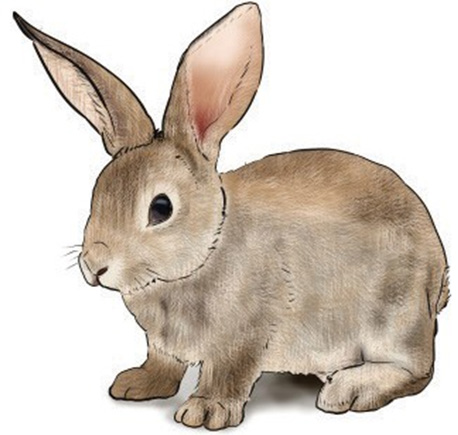
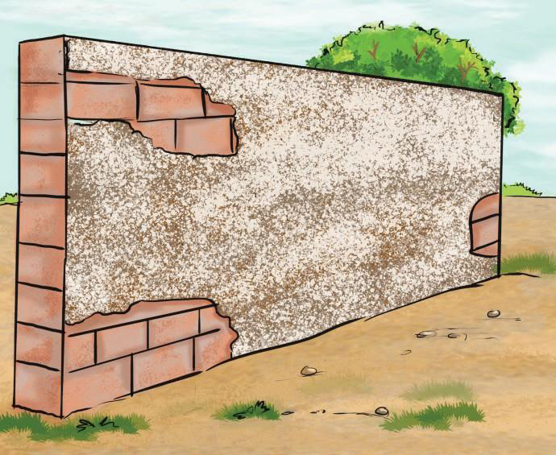

Figure 1.38: Rabbit furs showing actual textureVisual or simulated texture: This is defined as the way the surface of an object appears through the sense of vision.
The illusion of a 3-D surface imitates real texture which may be seen as rough but in the real sense, it is smooth.
This phenomenon signifies the term visual texture.
Figure 1.39 shows the visual texture.

Figure 1.39: Visual texture
Activity 1.5
Considering the elements of fine art, search images of a well created artwork from various sources including online, then;
(a)Identify types of elements of fine art in each artwork.
(b)Use the observed elements from the artworks and draw a bottle.
(c)Explain the significance of considering the elements of art in creating artworks.